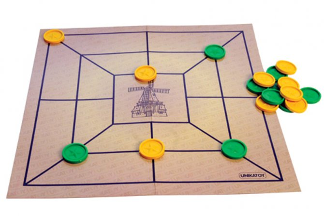

Mica
Tabla je na samom početku prazna. Prvi igra crni, a zatim naizmenično igrači postavljaju po jednu figuru na slobodnu presečnu tačku. Na početku se ne mogu pomerati, već se uvek postavljaju nove. Cilj je postaviti svoje tri figure na susedne tačke povezane linijom. Ako igrač u ovoj fazi formira micu, odmah uklanja jednu protivničku figuru sa table.Posle devet poteza sve figure su uvedene u igru, posle čega igrači naizmenično pomeraju po jednu figuru duž linija do susedne tačke.
Za rasturanje formirane mice koristi se termin „otvaranje“, a za novo formiranje „zatvaranje“. Igrač koji ostane na tri figure ima pravo da bilo koju od njih prebaci na bilo koje slobodno polje, bez obzira na presečne linije. Partija se u drugoj fazi igre može i završiti „blokiranjem“. Onaj ko na svom potezu nema šta da odigra - gubi partiju.